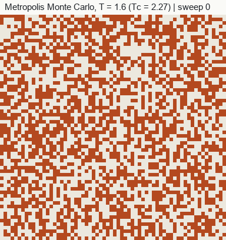

Curriculum/Computational methodsCMS 503
Monte Carlo and kinetic Monte Carlo
Where molecular dynamics follows real motion, Monte Carlo (MC) takes a shortcut: it proposes random changes and keeps or rejects them with rules that guarantee the right statistics. Because moves need not be physical, MC reaches equilibrium states that dynamics would take far too long to find, and its kinetic variant reaches seconds and beyond.
- Reading time
- about 12 min
- Leads to
- LAB 504: Monte Carlo: Ising
- Level
- Graduate: simulation methods
- Explain importance sampling, detailed balance and the Metropolis acceptance rule.
- Set up a lattice-model MC simulation and choose suitable moves.
- Describe cluster expansions and how they link DFT to alloy thermodynamics.
- Explain how kinetic Monte Carlo advances physical time, and what it needs as input.
1. Why sample randomly#
An equilibrium average in the canonical ensemble is an integral over all configurations:
⟨A⟩ = ∫ A(x) exp[−U(x)/kBT] dx / ∫ exp[−U(x)/kBT] dxThe space is enormously high-dimensional (3N coordinates, or 2N states for N two-state sites), so grids are impossible. Sampling configurations uniformly at random fails as well: nearly all random configurations (atoms overlapping, or a random jumble of A and B) have very high energy and negligible Boltzmann weight, so the average is dominated by rare lucky samples. Importance sampling draws configurations with probability proportional to their Boltzmann weight, so that the average is simply the mean of the samples, ⟨A⟩ ≈ (1/M)Σm A(xm).
The samples are generated by a Markov chain: each new configuration is produced from the current one by a random rule. If the rule satisfies detailed balance, so that the flow from state a to b equals the flow back at equilibrium,
π(a) P(a→b) = π(b) P(b→a), π(a) ∝ exp[−U(a)/kBT](and the chain can reach every state, which is ergodicity), then the chain converges to the Boltzmann distribution.
2. Metropolis algorithm#
The simplest rule satisfying detailed balance is due to Metropolis and co-workers (1953). Given a symmetric proposal (the probability of proposing a→b equals that of b→a):
- Pick a trial move (for example, flip one spin).
- Compute the energy change ΔE = Enew − Eold.
- If ΔE ≤ 0, accept. Otherwise accept with probability exp(−ΔE/kBT).
- If rejected, keep the old configuration (and count it again in the averages).
Hastings (1970) generalised this to asymmetric proposals by multiplying by the ratio of proposal probabilities. Two practical points: moves that change energy locally can be evaluated cheaply, by recomputing only the affected neighbours, so each step costs O(1) on a lattice; and the acceptance rate should be tuned (often 20 to 50%) by adjusting step sizes, because very high acceptance means moves are too small and very low means they are too large. One sweep is N attempted moves, and sweeps are the natural unit of MC “time”.
3. The Ising model#
The Ising model places a spin si = ±1 on each lattice site, with energy
E = −J Σ⟨ij⟩ si sj − h Σi sisummed over nearest-neighbour pairs. For J > 0 neighbours prefer to align. It is the minimal model of a phase transition: on the two-dimensional square lattice it has an exact solution (Onsager, 1944) with critical temperature kBTc = 2J/ln(1 + √2) ≈ 2.269 J. Below Tc a spontaneous magnetisation appears; above it, thermal disorder wins. The model maps directly to binary alloys and lattice gases, where the spin is the species on a site (A or B, or atom and vacancy) and J is built from pair energies; its ordering transition is the same mathematics as ordering in β-brass.

This interactive simulation needs JavaScript to run.
Near Tc the correlation length diverges and Metropolis single-spin flips suffer critical slowing down: large domains change very slowly. Cluster algorithms (Swendsen–Wang, Wolff) flip whole correlated clusters and remove most of the problem for such models.
4. Moves for materials#
The power of MC for materials is the freedom to design moves. Any set of moves that satisfies detailed balance and reaches the whole state space is allowed, whether or not it resembles real dynamics.
| Move | Ensemble | What it does | Used for |
|---|---|---|---|
| Displacement | NVT | Shifts one atom by a small random vector | Off-lattice equilibrium; relaxation |
| Exchange (swap) | NVT with fixed composition | Swaps the species of two atoms, even far apart | Chemical ordering and segregation in alloys, where diffusion in MD is far too slow |
| Volume change | NPT | Rescales the cell; acceptance includes the pΔV and −NkBT ln(V′/V) terms | Thermal expansion, equations of state |
| Insertion / deletion | Grand canonical (μVT) | Adds or removes an atom against a reservoir | Adsorption, gas uptake, vacancy concentrations |
| Species change | Semi-grand canonical | Changes the identity of a site at fixed chemical-potential difference Δμ | Composition as a function of Δμ, phase boundaries of alloys |
| Hybrid MC/MD | NVT or NPT | Alternates MD steps (relaxing local strain) with swap moves | Segregation to grain boundaries, ordering in multicomponent alloys with realistic potentials |
5. Lattice models and cluster expansion#
Real alloys are not Ising models, but their configurational energy can be mapped onto one. A cluster expansion (Sanchez, Ducastelle and Gratias, 1984) writes the energy of any arrangement σ of species on a fixed parent lattice as a sum over clusters of sites (single sites, pairs, triplets, …):
E(σ) = Σα mα Jα ⟨Φα(σ)⟩where Φα are products of site variables over cluster α, mα is a multiplicity and Jα are the effective cluster interactions (ECIs). The ECIs are fitted to a set of DFT energies of ordered structures (typically tens to hundreds of them), and the fit is checked by cross-validation. The expansion is exact if all clusters are included; in practice it is truncated, and the truncation error determines accuracy. Once fitted, the energy of any configuration costs a few operations, so MC can simulate millions of atoms over many sweeps with ab initio energetics. Typical outputs are order–disorder transition temperatures, solvus lines, ground-state structures, short-range order and its temperature dependence, and (with vibrational and electronic free energies added) first-principles phase diagrams. Software packages include ATAT, CASM and icet.
The same framework handles interstitial ordering (carbon in iron), vacancies and magnetic degrees of freedom by adding more site variables.
6. Better sampling#
- Parallel tempering (replica exchange). Several copies run at different temperatures and periodically swap configurations with acceptance min[1, exp((βi − βj)(Ei − Ej))]. High-temperature replicas cross barriers, low-temperature replicas refine; the combination escapes metastable states.
- Flat-histogram methods (Wang–Landau, multicanonical). Estimate the density of states g(E) by a random walk that visits all energies equally. From g(E), all thermodynamic quantities at all temperatures follow from one run, including free energies and latent heats.
- Cluster moves for critical systems, as noted above.
- Biased moves that propose chemically sensible changes more often, corrected by Hastings ratios.
7. Kinetic Monte Carlo#
Metropolis MC samples equilibrium but its “time” is not physical. Kinetic Monte Carlo (kMC) instead chooses real events with real rates and advances a physical clock. It rests on the picture of a system that sits in a potential-energy basin, vibrates for a long time and then hops (a diffusive jump, a reaction, a dislocation depinning) to another basin; the hops are rare, independent, random events (a Poisson process). Rather than simulating the vibrations, kMC jumps straight from hop to hop.
Each possible event i has a rate, typically from harmonic transition-state theory:
ki = νi exp( −Ea,i / kBT )where Ea,i is the activation barrier and νi the attempt frequency (about 1012–1013 s−1, from vibrational frequencies). The rejection-free algorithm (Bortz–Kalos–Lebowitz; also called the residence-time or Gillespie algorithm) is:
- List all possible events and compute the rates ki and the total rate R = Σi ki.
- Choose event i with probability ki/R, by drawing a uniform random number and finding where it falls on the cumulative sum of rates.
- Execute it (move the atom, change the state).
- Advance the clock by Δt = −ln(u)/R, with u a second uniform random number in (0, 1).
- Update the event list (only events near the change are affected) and repeat.
Every step makes progress, so the method is efficient even when rates are very small, and the time scale can reach seconds, hours or longer; the speed is limited by the fastest events, since the clock moves in steps of 1/R. If some events are much faster than others (for example back-and-forth hops between two sites), they dominate the step count without producing net change, and special treatment (coarse-graining, superbasins) is needed.
Input is the bottleneck
kMC needs a catalogue of events and their barriers. On a rigid lattice the barriers can be tabulated from DFT nudged-elastic-band calculations, but they depend on the local atomic environment (neighbouring solutes, strain), which leads to either many barriers or a barrier model fitted as a function of environment. Off-lattice (adaptive) kMC finds events on the fly by searching the potential-energy surface from each new minimum, at much higher cost per step but without having to guess the events beforehand.
Typical uses
Vacancy-mediated diffusion and clustering of solutes in alloys; precipitate nucleation and coarsening; irradiation-damage evolution in reactor steels; thin-film and crystal growth; catalytic surface reactions; point-defect evolution in semiconductors.
8. Grain growth with the Potts model#
The Potts model generalises Ising to Q states: each site carries an integer (a grain orientation) and neighbouring sites of different orientation cost energy J. Domains of equal integer represent grains, and the boundary between them has an energy proportional to its length. Metropolis dynamics reduces the boundary energy, so grains grow by boundary migration. Studies by Anderson, Srolovitz and co-workers (1984) used this to study normal grain growth, where the classical parabolic law predicts mean size ∝ t1/2, and to examine the grain-size distribution; fitted growth exponents in these models are usually somewhat below one half. The relationship to physical time must be calibrated, boundary mobility and energy are simple functions of misorientation in the basic model, and anisotropy or particle pinning require extensions; the model is nevertheless a popular tool for exploring grain growth and recrystallisation topologically.
9. MC compared with MD#
| Molecular dynamics | Metropolis Monte Carlo | Kinetic Monte Carlo | |
|---|---|---|---|
| Output | Trajectory with real dynamics | Equilibrium samples | Evolution with physical time |
| Time | Femtosecond steps, up to microseconds | Sweeps; not physical time | Physical, up to seconds and beyond |
| Moves | Dictated by forces | Any move satisfying detailed balance | List of real events with rates |
| Needs | Forces (potential) | Energies only | Event catalogue and barriers |
| Best for | Mechanisms, short-time dynamics, transport | Ordering, segregation, phase equilibrium | Slow diffusion-controlled evolution |
10. A minimal code#
A complete Metropolis sweep for the 2D Ising model, in units where J = kB = 1, is only a few lines of Python:
import numpy as np
rng = np.random.default_rng(1)
N, T = 32, 1.6
s = rng.choice([-1, 1], size=(N, N))
def sweep(s, T):
for _ in range(N * N):
i, j = rng.integers(N, size=2)
nb = s[(i+1) % N, j] + s[(i-1) % N, j] + s[i, (j+1) % N] + s[i, (j-1) % N]
dE = 2 * s[i, j] * nb
if dE <= 0 or rng.random() < np.exp(-dE / T):
s[i, j] *= -1
for _ in range(500):
sweep(s, T)
print("magnetisation per spin:", s.mean())Below Tc the magnetisation per spin ends near ±1; above it, it fluctuates near zero. Try T = 3 and compare; then plot energy against sweeps to see equilibration.
- Importance sampling with detailed balance produces Boltzmann-distributed samples; the Metropolis rule accepts with probability min(1, exp(-dE/kT)).
- Moves need not be physical: swap moves equilibrate chemical order far faster than dynamics can.
- Lattice models and cluster expansions carry DFT energetics into alloy thermodynamics at large size.
- Kinetic Monte Carlo advances physical time, dt = -ln(u)/R, using rates built from barriers.
- kMC is only as good as its event catalogue and barriers.
11. Check your understanding#
Why is a rejected move still counted in the averages?
Because the Markov chain must stay in state a with the probability 1 − Σb P(a→b) for detailed balance to hold. Repeated states carry weight, which is how low-probability states are visited less often. Dropping rejected steps would bias the average toward high-energy states.
A kMC run has rates summing to R = 106 s−1. About how much physical time does one step advance?
On average Δt = 1/R = 10−6 s (the expectation of −ln(u)/R is 1/R). A million steps then represent about one second.
Why does MC with swap moves equilibrate a ternary alloy much faster than MD?
In MD, atoms must diffuse to rearrange, which at ordinary temperatures takes times far beyond what MD can reach. A swap move exchanges two atoms directly regardless of distance and barrier, so the arrangement can sample the equilibrium distribution of chemical order in a small number of sweeps.
12. References and further reading#
- Landau, D. P. and Binder, K., A Guide to Monte Carlo Simulations in Statistical Physics, Cambridge University Press.
- Newman, M. E. J. and Barkema, G. T., Monte Carlo Methods in Statistical Physics, Oxford University Press (1999).
- Metropolis, N. et al., Equation of state calculations by fast computing machines, J. Chem. Phys. 21, 1087 (1953).
- Hastings, W. K., Monte Carlo sampling methods using Markov chains and their applications, Biometrika 57, 97 (1970).
- Swendsen, R. H. and Wang, J.-S., Nonuniversal critical dynamics in Monte Carlo simulations, Phys. Rev. Lett. 58, 86 (1987); Wolff, U., Collective Monte Carlo updating for spin systems, Phys. Rev. Lett. 62, 361 (1989).
- Wang, F. and Landau, D. P., Efficient, multiple-range random walk algorithm to calculate the density of states, Phys. Rev. Lett. 86, 2050 (2001).
- Sanchez, J. M., Ducastelle, F. and Gratias, D., Generalized cluster description of multicomponent systems, Physica A 128, 334 (1984).
- Bortz, A. B., Kalos, M. H. and Lebowitz, J. L., A new algorithm for Monte Carlo simulation of Ising spin systems, J. Comput. Phys. 17, 10 (1975).
- Gillespie, D. T., Exact stochastic simulation of coupled chemical reactions, J. Phys. Chem. 81, 2340 (1977).
- Voter, A. F., Introduction to the kinetic Monte Carlo method, in Radiation Effects in Solids, Springer (2007).
- Anderson, M. P., Srolovitz, D. J., Grest, G. S. and Sahni, P. S., Computer simulation of grain growth, Acta Metall. 32, 783 (1984).